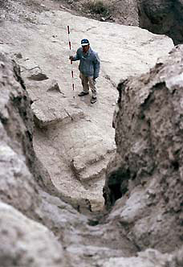

Department
of Ancient Near East > research
> excavations >
Merv, Turkmenistan
|

|
Merv was one of the major ancient cities of southwest Central Asia and was controlled by a succession of Iranian, Greek, Turkish and Central Asian rulers and governors. It is situated in the modern state of Turkmenistan which was formerly part of the Soviet Union. Intermittent American, Russian and Soviet archaeological excavations have been conducted at the site since 1890. From 1992-2000 nine seasons of excavations and surveys were conducted as part of the International Merv Project [IMP]- a collaboration between the British Museum, University College London and the former Academy of Sciences of Turkmenistan jointly represented and respectively directed by Dr St J. Simpson (Department of the Ancient Near East), Dr G. Herrmann and Dr K. Kurbansakhatov. The archaeological significance of Merv chiefly lies in the information it can provide on the interrelationship of politics, geography and material culture at a major city site at the interface of Central Asia and Iran. Important insights have been made into how the city developed over a long period and how significant changes were made to the use of space. The excavations have also revealed the exceptionally and unexpectedly well preserved fortifications, including one of the finest Seleucid city walls to be discovered. Two residential areas belonging to the Sasanian period were excavated, one in the citadel and the other in the lower city. These have provided important well stratified and closely dated groups of artefactual and environmental material which are among the first of their type to be recovered from a major Sasanian site. The discovery of cotton seeds from 5th century and later contexts is the first occasion that remains of this crop have been identified at a Sasanian site and suggest that cotton textile manufacture was an important economic component of the city. The discovery of a 9th-10th century workshop specialising in the manufacture of crucible steel was another major achievement as this was not only the earliest to be identified but also confirms in detail the technical processes described by Early Islamic writers. Further excavations conducted in the medieval city revealed drastic rebuilding of the exceptional fortifications and the aftermath of the overwhelming Mongol sack of Merv in 1221 which precipitated a considerable decline in the standard of living in the former Seljuk citadel. The city of Merv appears to have been founded by Cyrus the Great (559-530) when this region was part of the eastern Achaemenid empire. The Achaemenid remains are deeply buried beneath later occupation levels but appear to be limited to that part of the site known today as Erk Kala. This is not the earliest period of occupation in the Merv oasis however. Other archaeological surveys and excavations in the northern part of the oasis have revealed extensive remains of village and urban life beginning in the 3rd millennium BC. During this time the region flourished as part of a distinctive Bronze Age culture known as the Bactria-Margiana Archaeological Complex [BMAC] which enjoyed close links with that of eastern Iran. Despite some later secondary sources, there is no reliable evidence that Alexander the Great (356-323) ever visited Merv although he certainly campaigned to the north and east following his overthrow of the Achaemenid Empire. However, the city continued to be occupied during the following Seleucid period when it was officially refounded in his own name by Antiochus I (281-261) as Antioch Margiana. During this period the city was drastically enlarged with the construction of new Greek-style fortifications enclosing a roughly rectangular city measuring more than two kilometres across. It is likely that other features of Greek cities, such as gymnasia and theatres, were also constructed - as in the case of the city at Ai Khanum in northern Afghanistan - but if so these still remain to be discovered. The previous settlement at Erk Kala now became a separately fortified citadel for the lower city, which is known today as Gyaur Kala. Occupation continued here without a break for the following thousand years throughout the Greco-Bactrian, Parthian and Sasanian periods. The complete sequence of Sasanian coins struck at Merv not only indicate that the city was taken during the latter part of the reign of Ardashir I (ca 220-240) but that it remained under direct Sasanian rule throughout this four-hundred year period. Textual and archaeological evidence also indicates that the city was populated with a diverse range of religious faiths ranging from the official Zoroastrian religion to Nestorian Christians, Buddhists and Manichaeans. The last Sasanian ruler, Yazdgard III (633-651) was murdered close to the city and the Sasanian military governor [marzban] Mahawayh b. Mafanah b. Fahd surrendered to the approaching Arab army. This marks the beginning of the Arab Conquest of Central Asia and a further chapter in the history of the city. Merv initially served as a springboard for the further advances of the Arab army into Central Asia and attracted Arab settlers and probably early converts to Islam. The area of the old Sasanian city in Gyaur Kala was gradually abandoned to become an industrial suburb with ceramic and metal workshops east of the new city which developed between the Raziq and Majan canals. Nevertheless Merv achieved some political spotlight in February 748 when Abu Muslim (d. 750) established a new Abbasid dynasty at Merv, from where he directed his armies to conquer Iran and Iraq and establish a new capital at Baghdad. Thereafter Merv remained a provincial capital except for a brief period from 813 to 818 when it effectively became capital of the Islamic world during a period of temporary residency by the caliph al-Ma'mun. From the 9th to early 11th centuries Merv was governed by successive Tahirid and Samanid rulers but remained secondary in importance to the regional capital of Nishapur in Iranian Khurasan. The great revival in the fortunes of Merv was under the Seljuks who established it as an eastern capital from 1037 to 1157. The golden age of this period was the reign of Sultan Sanjar (d. 1157), whose tomb still dominates the centre of the medieval city-site of Sultan Kala. Sanjar also established a new citadel which was located at the northeast corner of the city. This is now called Shahriyar Ark and traces of various ruined buildings survive inside. The close of his reign was marked by misfortune as he was captured by Ghuzz Turkmen tribesmen and held in captivity for three years while his city was pillaged. The decades following his death were marked by further political struggles between the Khwarazmshahs and the Ghurid rulers of northern Afghanistan but these were brought to a dramatic end in February 1221 when a Mongol army commanded by Tolui, son of Genghis Khan, besieged Merv. Its surrender was followed by the slaughter of most of the inhabitants according to Islamic writers. Despite reoccupation under the Ilkhanids, the city never seriously recovered. After the death of Timur in 1405, his son Shah-Rukh (d. 1447) rebuilt the dam on the river Murghab and founded a new town a short distance south of Sultan Kala at a spot known as Abdulla Khan Kala after the Shaybanid Uzbek ruler Abd Allah b. Iskander (1006-1583/88) and next to the present town of Bayram Ali. This flourished for a century under the Timurids but thereafter was caught up in political and military struggles between the Safavids and Uzbeks.
|